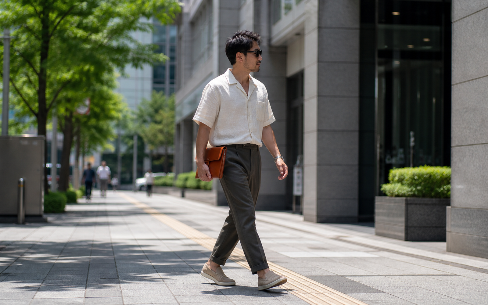
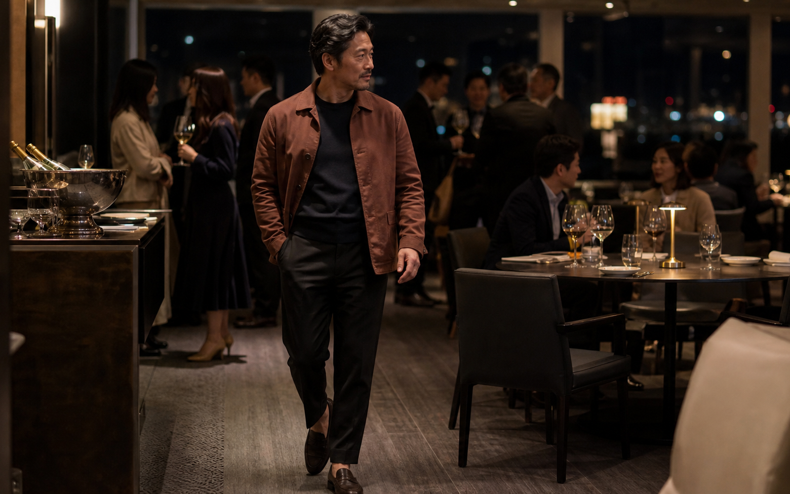

summer-office-look, draft false, 이미지 6장 렌더링 확인용 HTML/images/summer-office-look/summer-office-look-thumbnail.png여름 오피스룩: 하루의 장면을 잇는 다섯 조합
여름의 업무일은 한 가지 온도로 끝나지 않습니다. 더운 출근길을 지나 사무실에 앉고, 대면 미팅을 마친 뒤 저녁 약속으로 이어집니다. 옷을 매번 갈아입을 수 없다면, 조합을 더 많이 갖추기보다 칼라와 겉옷, 팬츠가 맡을 일을 나눠 두는 편이 현실적입니다.
아래 다섯 조합은 제품 추천이 아니라 편집 제안입니다. 소재의 냉감, 구김, 세탁 편의, 착용감은 실제 제품의 사양과 케어 라벨을 확인한 뒤 판단해야 합니다. 복장 기준도 회사와 행사, 장소에 따라 달라집니다.[^harvard][^gq-business]
1. 오전 대면 미팅·발표: 가벼운 재킷 + 간결한 이너
/images/summer-office-look/summer-office-look-look-01.png상황
외부 고객을 처음 만나거나, 팀 앞에서 발표하는 오전입니다. 정장을 입어야 하는 날인지부터 확인하고, 그보다 낮은 긴장도의 차림이 가능한 자리라면 재킷과 팬츠의 연결로 선을 남깁니다.
핵심 아이템
• 가벼운 재킷 또는 오버셔츠형 재킷
• 같은 계열 또는 톤이 맞는 팬츠
• 칼라 없는 이너 또는 니트 폴로
• 로퍼 또는 장식이 적은 스니커즈
조합 원리
먼저 재킷을 입을지 정합니다. 그다음 팬츠를 같은 톤으로 묶거나, 명도 차이가 크지 않은 다른 팬츠를 고릅니다. 이너는 로고와 큰 그래픽보다 표면이 조용한 쪽이 재킷의 선을 살립니다.
대면·네트워킹 장면의 비즈니스 캐주얼 예시에는 칼라 셔츠, 단정한 스웨터, 카키 또는 드레스 슬랙스가 포함됩니다. 다만 면접과 업무 행사의 복장은 고용주 지침에 따라 달라질 수 있습니다.[^harvard] 블레이저와 드레스 셔츠를 비즈니스 캐주얼 구성으로 보는 편집 사례도 참고할 수 있습니다.[^gq-business]
피할 점
재킷이 시원하거나 구김이 적다고 단정하지 않습니다. 실제 원단, 안감, 케어 라벨을 확인해야 합니다. 고객 미팅의 복장 수준도 재킷 한 장으로 결정하지 말고, 회사와 행사 안내를 먼저 봅니다.
2. 사무실 집중 업무·짧은 회의: 니트 폴로 또는 질감 있는 반소매 상의 + 스트레이트 팬츠
/images/summer-office-look/summer-office-look-look-02.png상황
개인 업무에 집중하다가 짧은 회의와 사내 점심 약속이 이어지는 날입니다. 재킷 없이 보내는 시간이 길다면, 상의의 칼라나 표면감으로 정돈의 기준을 남길 수 있습니다.
핵심 아이템
• 니트 폴로 또는 표면 질감이 있는 반소매 상의
• 선이 단순한 스트레이트 팬츠
• 간결한 가죽 신발 또는 로우 프로파일 스니커즈
조합 원리
상의에는 칼라 또는 질감 중 하나만 남깁니다. 상의의 표면감이 있다면 팬츠와 신발의 색과 형태는 단순하게 둡니다. 폴로의 칼라가 또렷할수록 색의 대비도 낮추는 편이 조합을 안정적으로 만듭니다.
대학 커리어센터의 비즈니스 캐주얼 안내에는 칼라 셔츠와 단정한 스웨터가 예시로 들어갑니다.[^harvard] 폴로의 수용 범위는 사무실마다 다를 수 있으므로, 조직의 기준을 먼저 확인하는 편이 안전합니다.[^gq-business]
피할 점
니트 폴로를 여름용이라고 일반화하지 않습니다. 원사, 게이지, 혼용률, 케어 라벨이 확인된 뒤에 그날의 환경과 함께 판단합니다. 반소매 상의의 허용 범위도 업종과 사내 문화에 따라 다릅니다.
3. 더운 출근길·외부 이동: 오픈칼라 또는 반소매 셔츠 + 이지 테이퍼드 팬츠

/images/summer-office-look/summer-office-look-look-03.png상황
도보와 대중교통으로 출근하거나, 거래처와 점심 약속 사이를 짧게 이동하는 날입니다. 이동 뒤에도 업무 장면이 남아 있다면 티셔츠와 트레이닝웨어로만 기울기보다 셔츠의 칼라와 팬츠의 선을 활용해 봅니다.
핵심 아이템
• 오픈칼라 또는 반소매 셔츠
• 허리 구조가 과도하게 포멀하지 않은 테이퍼드 팬츠
• 단정한 로우 프로파일 스니커즈 또는 로퍼
조합 원리
얼굴 가까이는 칼라로 정돈하고, 팬츠는 밑단으로 갈수록 가벼워지는 비례를 검토합니다. 셔츠의 소매 길이와 신발의 노출 정도는 회사의 복장 기준 안에서 조절합니다. 실외 일정이 길면 제품의 케어 라벨과 원단 정보를 다시 확인합니다.
OSHA의 열 노출 안내는 느슨하고 밝은색의 통기성 소재 의복이 몸을 식히는 데 도움이 될 수 있다고 설명합니다. 이는 특정 패션 제품의 냉감 성능을 뜻하지는 않습니다.[^osha] 반소매와 오픈칼라 셔츠의 업무 적합성도 사무실마다 다를 수 있습니다.[^gq-business]
피할 점
"땀 걱정 없는", "장시간 이동에도 편한" 같은 결과 표현은 쓰지 않습니다. 팬츠의 편안함은 패턴과 신축성, 실제 착용 조건을 확인하기 전에는 판단하기 어렵습니다.
4. 냉방된 오피스·워크숍: 긴소매 셔츠 + 이너 + 릴랙스드 팬츠
/images/summer-office-look/summer-office-look-look-04.png상황
냉방이 강한 오픈오피스에서 일하거나, 장시간 회의와 사내 워크숍이 예정된 날입니다. 실외의 더위와 실내의 체감 차이를 한 벌로 해결하려 하기보다, 셔츠의 여밈과 소매를 조절할 여지를 둡니다.
핵심 아이템
• 소매를 조절할 수 있는 긴소매 셔츠
• 무지 이너
• 과도하게 넓지 않은 릴랙스드 팬츠
• 스니커즈 또는 로퍼
조합 원리
셔츠는 단독으로 입거나, 이너 위에 열어 입거나, 소매를 조절하는 방식으로 활용합니다. 이너와 팬츠는 색의 대비를 낮춰 두면 장면이 바뀌어도 시선이 한곳에 쏠리지 않습니다. 중요한 것은 두꺼운 레이어가 아니라 조절할 수 있는 한 겹입니다.
사무실의 열쾌적성은 의복뿐 아니라 공기 온도, 기류, 습도, 활동량 등 개인·환경 요인의 영향을 받습니다.[^ccohs] 긴소매 셔츠와 이너의 조합은 이런 차이를 고려해 조절의 여지를 두는 편집안입니다.
피할 점
긴소매 셔츠가 냉방 문제를 해결하거나 건강상의 문제를 막는다고 말하지 않습니다. 실내 체감에는 개인 차이가 있으므로, 필요하면 자리와 일정에 맞춰 한 겹을 더하거나 뺍니다.
5. 퇴근 후 식사·가벼운 네트워킹: 오버셔츠형 재킷 + 단색 이너 + 테이퍼드 팬츠

/images/summer-office-look/summer-office-look-look-05.png상황
동료와 저녁을 먹거나, 가벼운 업계 모임과 개인 약속이 이어지는 시간입니다. 낮의 팬츠를 그대로 두고, 상의의 레이어와 신발을 다시 점검해 장면의 농도만 바꿉니다.
핵심 아이템
• 오버셔츠형 재킷 또는 셔츠 재킷
• 단색 티셔츠 또는 니트 이너
• 낮 시간과 교차 가능한 테이퍼드 팬츠
• 로퍼 또는 미니멀 스니커즈
조합 원리
낮에 입었던 팬츠를 유지한 채 상의 한 겹을 더하거나, 이너를 같은 계열의 색으로 바꿉니다. 장식성보다 표면의 질감과 칼라의 유무로 차이를 만듭니다. 신발은 약속의 장소와 이동 거리를 보고 마지막에 고르는 편이 낫습니다.
네트워킹 행사에서는 비즈니스 캐주얼이 기본 복장으로 안내되기도 하지만, 실제 기준은 행사와 장소마다 다릅니다.[^harvard] 여름 업무복을 장면별로 나누는 편집 사례는 참고할 수 있으나, 그것이 모든 저녁 약속의 드레스코드를 대신하지는 않습니다.[^british-gq][^gq-summer-office]
피할 점
"한 벌로 어디서나 통한다"거나 "저녁 자리에서 돋보인다"고 일반화하지 않습니다. 행사 안내, 업장 성격, 함께 만나는 사람을 확인한 뒤 상의의 격을 조정합니다.
다섯 장면을 한 옷장으로 묶는 법
다섯 조합은 다섯 벌을 사라는 뜻이 아닙니다. 팬츠는 1, 3, 5번 장면 사이에서, 셔츠는 3, 4, 5번 장면 사이에서 다시 쓸 수 있습니다. 중요한 것은 새로움을 늘리는 일이 아니라, 오늘의 일정에 맞춰 칼라와 레이어, 팬츠의 역할을 다시 정하는 일입니다.
업무일의 옷은 먼저 말할 필요가 없습니다. 다만 하루가 끝날 때까지 선을 잃지 않으면 충분합니다.
읽기 전 확인할 점
• 이 글은 MAGMA의 판매 SKU, 색상, 소재 혼용률, 가격, 재고를 확정하지 않습니다.
• 신발과 이너는 조합을 설명하기 위한 편집 소품입니다. MAGMA의 초기 상품군 후보라는 뜻은 아닙니다.
• 외부 출처 중 GQ 자료는 스타일링 사례를 위한 편집 참고 자료입니다. 보편적 드레스코드나 제품 성능의 근거로 확대하지 않습니다.
[^harvard]: Harvard University, Mignone Center for Career Success, "Professional Attire Guide." 페이지 표기 2025-11-20, 확인 2026-08-19. https://careerservices.fas.harvard.edu/resources/mcs-professional-attire-guide/
[^ccohs]: Canadian Centre for Occupational Health and Safety, "Thermal Comfort for Office Work." 페이지 표기 2025-08-28, 확인 2026-08-19. https://www.ccohs.ca/oshanswers/phys_agents/thermal_comfort.html
[^osha]: U.S. Occupational Safety and Health Administration, "Protecting Workers from the Effects of Heat." 확인 2026-08-19. https://www.osha.gov/sites/default/files/publications/OSHA4374.pdf
[^gq-business]: GQ, "Business Casual Attire for Men, Explained." 페이지 표기 2025-09-29, 확인 2026-08-19. https://www.gq.com/story/business-casual-attire-for-men-explained
[^british-gq]: British GQ, "Summer Business Casual Outfits." 페이지 표기 2025-06-27, 확인 2026-08-19. https://www.gq-magazine.co.uk/article/summer-business-casual-outfits
[^gq-summer-office]: GQ, "What to Wear to the Office in Summer." 확인 2026-08-19. https://www.gq.com/story/what-to-wear-office-summer-mr-porter